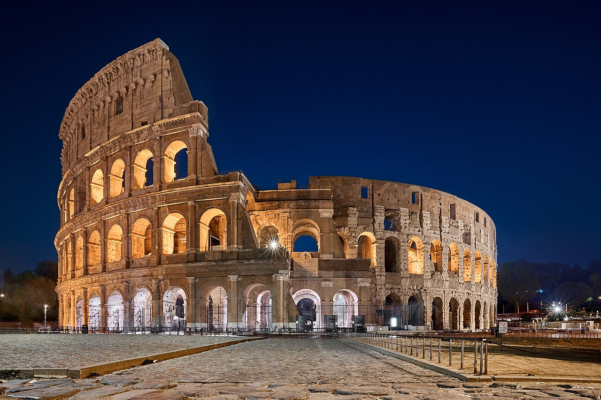

Дата народження: 13 травня 2007 року. Місце народження: місто Гайсин, Вінницька область.
Освіта: навчалася в школі №1 (м. Гайсин). Зараз навчаюся в Національному технічному університеті України «Київський політехнічний інститут імені Ігоря Сікорського», м. Київ.
Моє найулюбленіше місто, де я бувала це Рим. Це місто з багатотисячолітньою історією, де давні пам'ятки, як-от Колізей і Пантеон, поєднуються з сучасним життям. Мене вразили вузькі затишні вулички, італійська кухня та особлива атмосфера, яку відчуваєш на кожному кроці.
